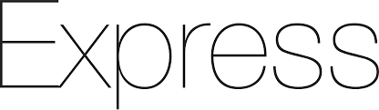

Stack MERN
Voici les principales technologies et outils que je maîtrise dans le cadre du développement web avec la stack MERN.
React
Création d'interfaces utilisateur dynamiques avec React. Gestion de l'état avec Redux et React Hooks.

Express.js
Développement d'API backend robustes et performantes avec Express.js.
MongoDB
Base de données NoSQL pour gérer efficacement les données non relationnelles.

Node.js
Développement backend avec Node.js pour des applications rapides et évolutives.

Autres Compétences
| Autres Compétences | |
|---|---|
| Langages | JavaScript (ES6+), HTML5, CSS3, TypeScript |
| Environnements | Visual Studio Code, Git/GitHub, Postman |
| Bases de données | MongoDB |
| MySQL (bases fondamentales) | |
| Méthodes | Scrum, Kanban, Agile |